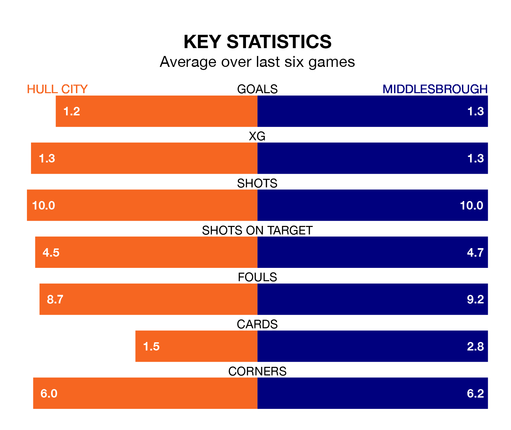

Middlesbrough face Hull City on Wednesday seeking to protect their long unbeaten run in EFL Championship.
The Boro are unbeaten in seven, with five wins and two draws, ahead of the 7.45pm kick-off.
They face a Hull team who have won one and drawn four over the same number of games.
In the last 10 years, Hull and Middlesbrough have played each other on 15 occasions. Hull won six of them, Middlesbrough seven, and they drew twice.
On average, the Tigers scored 1.4 goals and the Boro 1.5 in those matches.
Their last meeting was on December 13, when Hull won 2-1 away.
With 57 goals in 40 games so far this season, Hull are scoring more than average in the league with 1.4 goals per game. And they are conceding at an average rate, letting in 52 goals at a rate of 1.3 per game.
Middlesbrough are also above average scorers, with 1.4 goals per game, compared to a league average of 1.3. They have conceded 1.3 goals per game.
City are eighth in the table after 40 games, of which they have won 17 and drawn 10, earning 61 points.
The Boro are one place behind the Tigers in ninth, with 18 wins and seven draws putting them on the same number of points.
Hull's last match was on Saturday, a 3-1 win against Cardiff City, with Fabio Carvalho (two) and Jaden Philogene getting the goals for the Tigers.
Middlesbrough beat Swansea City 2-0 last time out, also on Saturday, with Emmanuel Latte Lath on the scoresheet.
Wednesday's match will be refereed by Gavin Ward, who has taken charge of 21 EFL Championship games so far this season, issuing two red cards and booking 79 players. He has awarded two penalties.
The last Middlesbrough game Ward refereed was the 1-0 loss at home against Millwall on August 5. He is yet to oversee a match featuring Hull this season.
Updated: 11:20 (UTC), 09/04/24